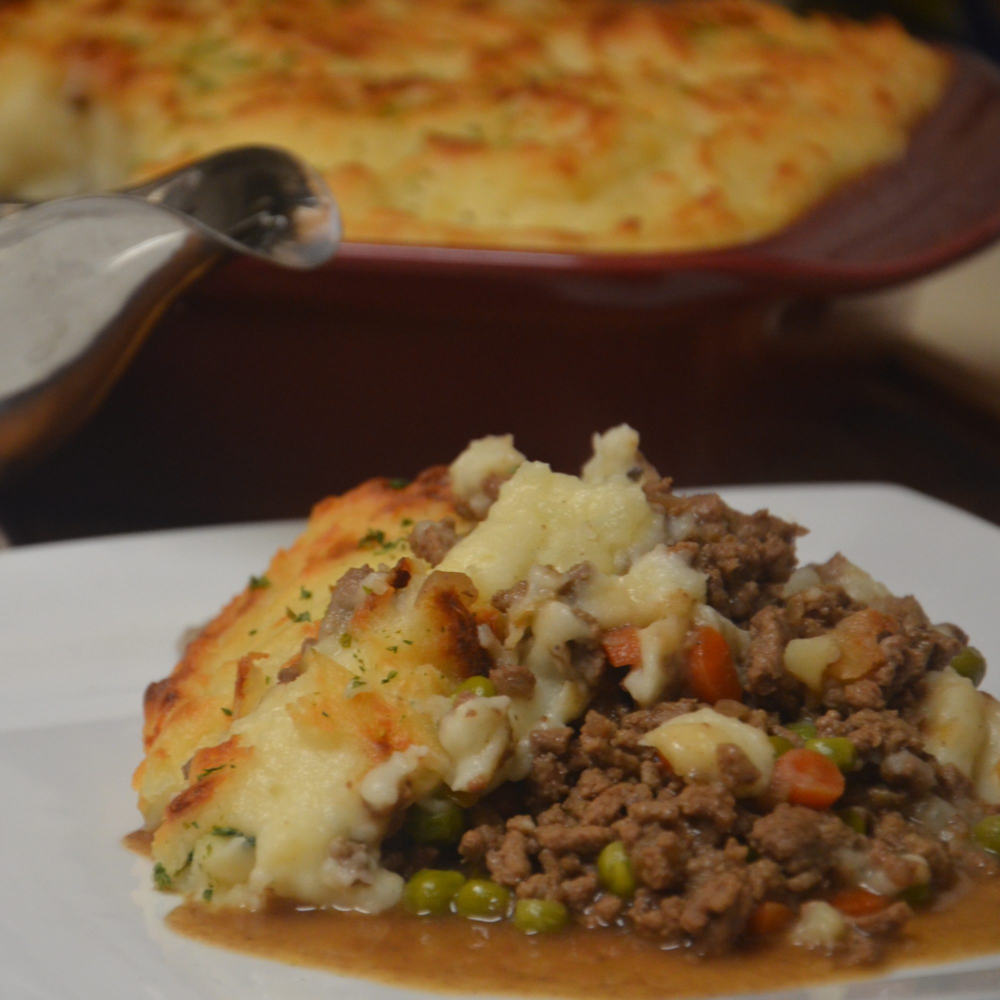

<h1 align="center">Shepherd's Pie</h2>

<div align="center">
	
	<h3>Shepherd's pie is a comfort food casserole that originated in England. It's traditionally 	     made with minced meat (usually ground lamb), gravy, vegetables, and mashed potatoes.
	
	You may also hear it called "cottage pie." The two terms are used interchangeably, but 
	technically traditional shepherd's pie is made with ground lamb and traditional cottage pie 
	is made with ground beef.</h3>

	<h2><u>Ingredients</u></h2>
	<h3><ul>
		<li>Ground Beef</li>
		<li>Potatoes</li>
		<li>Carrots</li>
		<li>Onions</li>
		<li>Flour</li>
		<li>Ketchup (optional)</li>
		<li>Beef Broth</li>
		<li>Cheese</li>
	</ul></h3>

	<h2><u>Steps</u></h2>
	<h3><ol>
		<li><h2>Mash the Potatoes</h2>

		Boil the potatoes until tender, but still slightly firm. Mash the potatoes and mix 
		in the butter, cheese, and onion. Season with salt and pepper to taste.</li>
		
		<li><h2>Carrot Preparation</h2>
		Boil the carrots until tender, then mash them.</li>

		<li><h2>Ground Beef Preperation</h2>

		Cook the onions and ground beef until the onions are translucent and the beef is 
		browned. Drain the beef fat, then add flour, ketchup (optional), and beef broth. 
		Simmer for 5 minutes. </li>
		
		<li><h2>Bake</h2>
		Add the beef mixture, then carrots, then potatoes to a casserole dish. Then add 
		cheese and bake until golden brown.</li>
	</ol></h3>
</div>
